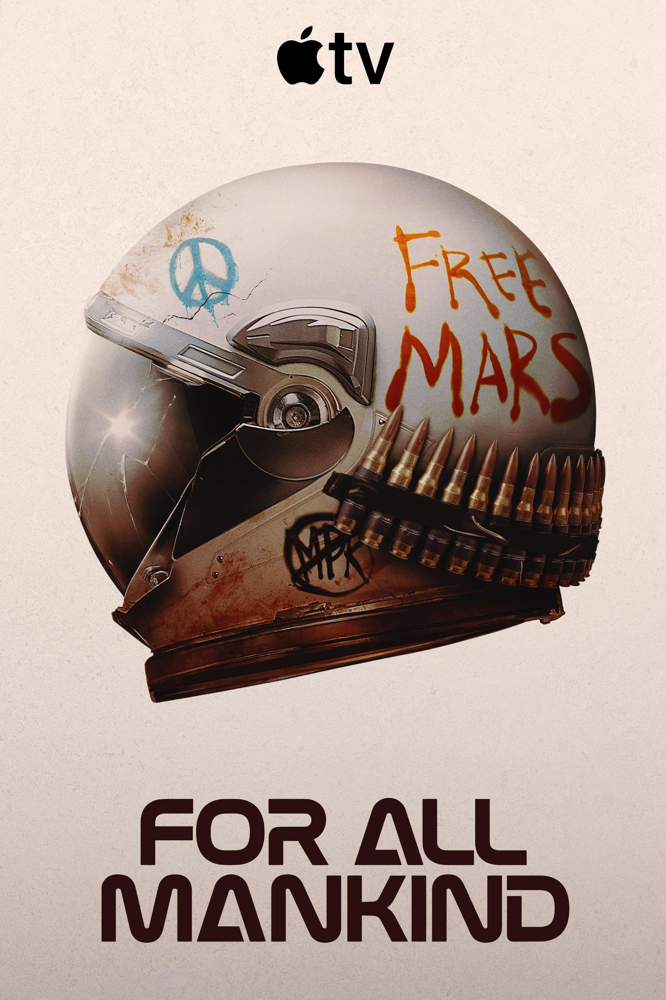

01Alternate history sci-fi
For All Mankind
NASA never loses momentum in this timeline, and the space race keeps escalating into a long-form alternate history drama.
GitHub Pages Edition
A cleaner home for the shows currently on deck, rebuilt from markdown into a visual page that is easier to scan, share, and keep expanding.
Current Picks

01Alternate history sci-fi
NASA never loses momentum in this timeline, and the space race keeps escalating into a long-form alternate history drama.
 02
02
Political mystery thriller
A glossy conspiracy thriller with a locked-environment setup, high-level politics, and a slow reveal underneath the calm exterior.